SDLTRS Help
Text GUI
Introduction
Features
Options
Text GUI
OS X Features
Release History
Credits
Main Menu
Floppy Disk Management Menu
Hard Disk Management Menu
Cassette Management Menu
Model Selection Menu
Configuration/State File Management Menu
Printer Management Menu
Default Directories Menu
ROM Files Menu
Display Settings Menu
Joystick Settings Menu
Miscellaneous Settings Menu
Main Menu
Floppy Disk Management Menu
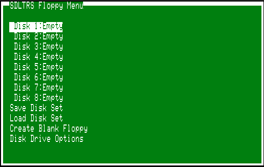
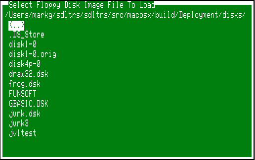
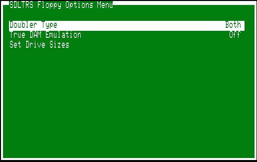
Hard Disk Management Menu
Cassette Management Menu
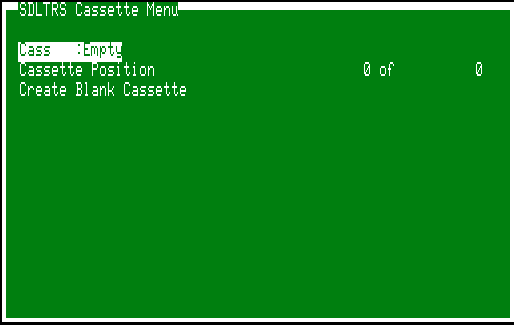
Model Selection Menu
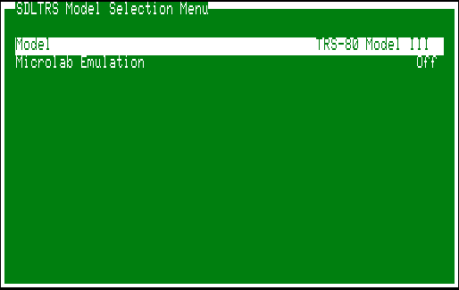
Configuration/State File Management Menu
Printer Management Menu
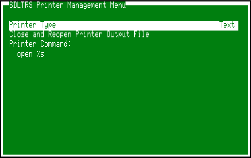
Default Directories Menu
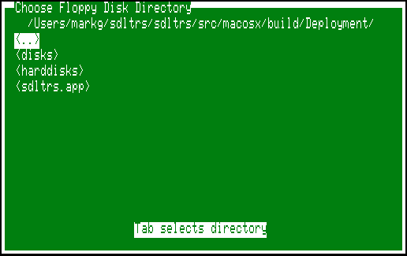
ROM Files Menu
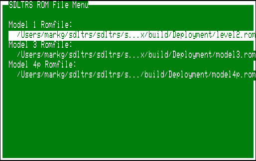
Display Settings Menu
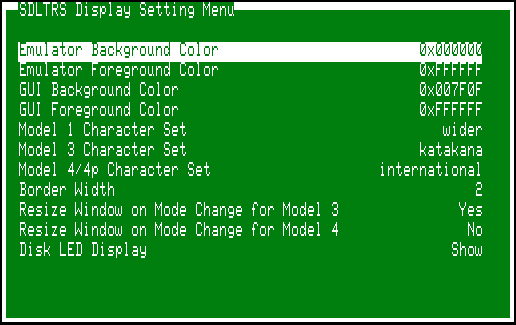
Joystick Settings Menu
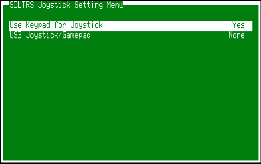
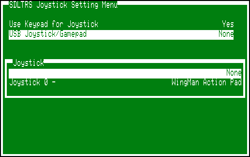
Miscellaneous Settings Menu
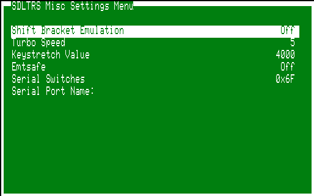